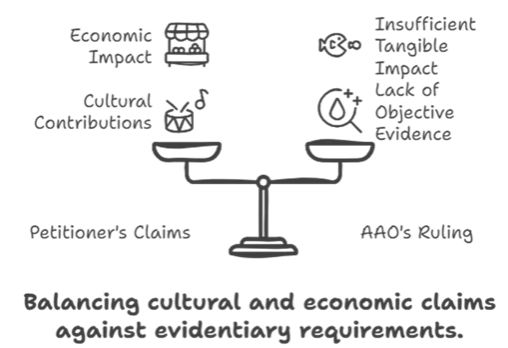

NIW for Artists Required for Higher Standard of Review
Indiana Immigration Attorney’s Insights:
NIW for Artists: A Higher Standard of Review
The Administrative Appeals Office (AAO) ruling focused on whether the petitioner, a marketing and digital strategist working with Latin music artists, demonstrated that her work would have a broad, national impact, which is a requirement for a National Interest Waiver (NIW).
Petitioner’s Argument:
-
1. Promoting U.S. Culture and Mental Well-being:
The petitioner claimed her work as a digital marketing strategist for Latin musicians would benefit U.S. culture by promoting Latin music, which aligns with national cultural interests.
She also argued that music has been shown to promote mental health, helping individuals cope with social isolation, anxiety, and uncertainty, which are significant concerns, especially in the post-COVID-19 context. This would ostensibly benefit the mental well-being of U.S. families and contribute to a more inclusive and diversified music industry.
-
2. Supporting Facts:
Music has been linked to mental health benefits, such as reducing stress and anxiety, which could be considered a contribution to public well-being.
The U.S. government, particularly the Biden Administration, has emphasized the promotion of the arts, committing over $57 million in National Endowment for the Arts (NEA) funding to support artists and cultural organizations in the wake of the COVID-19 pandemic.
-
3. Economic Impact:
The petitioner pointed to the growth of music streaming platforms, such as Apple Music and Spotify, and argued that her efforts would contribute to expanding the U.S. music market, particularly for Latin artists.
She claimed that helping Latin musicians establish themselves in the U.S. would have economic benefits, as Latin music is a growing sector that already contributed over $510 million in revenue in 2022.
-
4. Supporting Facts:
Latin music has indeed seen significant growth in the U.S. in recent years, with Latin genres gaining popularity on major streaming platforms.
Music-related industries do contribute to the U.S. economy, creating jobs and generating revenue.
AAO’s Ruling Against the Petitioner:
-
1. Lack of National-Level Impact:
The AAO ruled that the petitioner’s work, while potentially valuable for individual clients and the Latin music community, did not demonstrate sufficient national importance. The AAO requires the proposed endeavor to have a broad impact beyond immediate clients, benefiting the nation at large in terms of economic, cultural, or societal effects.
-
2. Supporting Facts for the Ruling:
The petitioner’s argument that her work would benefit U.S. families’ mental well-being lacked specific evidence showing how her involvement in marketing for Latin musicians would directly impact mental health on a national scale. While music may improve mental health, the AAO found no clear link between the petitioner’s digital marketing services and broader public mental health outcomes.
The AAO noted that Latin music already accounted for a significant share of the music industry’s revenue, but the petitioner did not provide clear evidence of how her personal efforts would substantially grow or impact the industry on a national level. For instance, there was no documentation about how her marketing strategies would increase revenue, employ U.S. workers, or affect large platforms like Spotify or Apple Music.
-
3. Failure to Identify Tangible, Broad Impact:
The AAO pointed out that the petitioner did not identify specific U.S.-based Latin artists she would work with or provide clear examples of how her work would lead to broad, significant outcomes, such as job creation or economic growth.
Although the petitioner referenced Biden Administration initiatives to promote arts and diversity, the AAO found her connections between these initiatives and her proposed work to be vague. The initiatives she cited were general, with no direct link to Latin music specifically, nor did the petitioner demonstrate how her efforts would be essential to advancing these initiatives.
-
4. Supporting Facts for the Ruling:
The petitioner did not provide independent, objective evidence (such as expert letters or industry impact assessments) to substantiate her claims about the national-level impact of her proposed endeavor.
The AAO has a high standard for national importance, requiring a clear, broad-reaching impact, such as job creation or substantial economic effects, which the petitioner’s work did not demonstrate.
Conclusion:
In summary, the petitioner’s argument emphasized the cultural and economic contributions of her work in the Latin music sector, aligning with U.S. arts initiatives and promoting mental well-being. However, the AAO ruled that the evidence provided was too vague and lacked detailed, objective support to prove national importance. The petitioner failed to demonstrate how her marketing efforts would have a tangible, wide-reaching impact on the U.S. music industry or society beyond her specific clients. Ultimately, the AAO’s decision reflects the high bar set for NIW applicants, particularly in non-scientific fields. While I understand and respect the petitioner’s argument, I also agree with the AAO’s ruling in this instance. The lack of objective, far-reaching evidence made it difficult to prove that her proposed endeavor had the broad national impact required under the NIW framework. From my perspective as an attorney, this case reinforces the importance of preparing Non-STEM NIW petitions with meticulous attention to how the petitioner’s work directly serves the national interest, supported by strong, verifiable documentation.